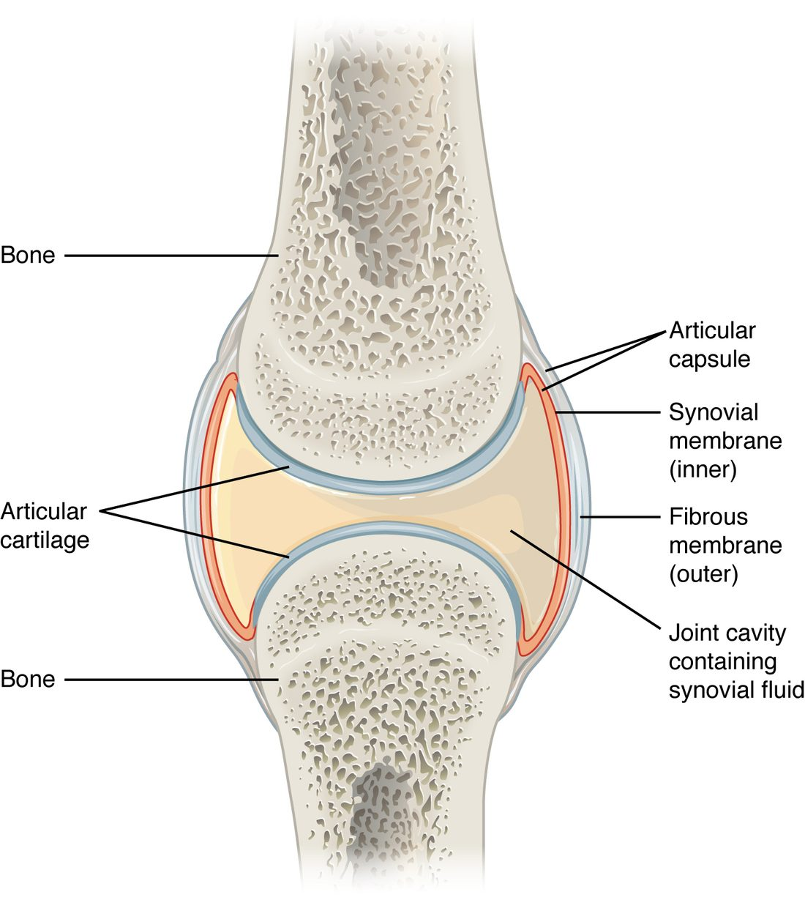

Synovial joints
A synovial joint has articular cartilage on each bone end, a joint cavity of synovial fluid, and an articular capsule with an outer fibrous membrane and an inner synovial membrane.
Part 1 · Clinical hook
Why this matters
Jada, 19, plants her foot to cut past a defender in a soccer game, hears a pop in her right knee and falls. Within two hours the knee is swollen and tight. Months later, before surgery, it keeps giving way whenever she twists. An MRI shows a torn anterior cruciate ligament, one of the two ligaments that cross inside the knee.
Part 2 · Foundations
What this builds on
Part 3 · Prerequisite check
Quick check before you start
1. Which structural class of joint has a fluid-filled space between the bones?
- Fibrous joint
- Cartilaginous joint
- Synovial joint
Show the answer
Only synovial joints have a fluid-filled space between the bone ends. Fibrous and cartilaginous joints are solid all the way across.
- Fibrous joint:
- Cartilaginous joint:
- Correct: Synovial joint:
2. What kind of tissue is a ligament?
- Dense regular connective tissue
- Hyaline cartilage
- Loose areolar connective tissue
Show the answer
Ligaments are cords of dense regular connective tissue, with collagen bundles running parallel. That makes them strong along one line of pull.
- Correct: Dense regular connective tissue:
- Hyaline cartilage:
- Loose areolar connective tissue:
3. Which bone has a head that sits in the acetabulum?
- The humerus
- The femur
- The tibia
Show the answer
The acetabulum is the socket on the side of the hip bone, and the head of the femur sits in it. The head of the humerus sits against the glenoid cavity of the scapula.
- The humerus:
- Correct: The femur:
- The tibia:
Part 4 · Anatomy panel
Anatomy

With labels hidden, select a box to reveal its label.
Part 5 · Causal chain
How it works, step by step
- Jada's foot is planted and her nearly straight knee twists while her body moves on, driving the tibia forward under the femur.The anterior cruciate ligament, which stops the tibia sliding forward, is stretched past its limit and tears.
- The torn ligament's blood vessels break inside the capsule.Blood fills the joint cavity, and the knee swells tight within a few hours.
- With the ligament torn, nothing inside the knee holds the tibia back from sliding forward on the femur.When she pivots, the tibia shifts forward and twists, and the knee gives way.
- Each episode of giving way grinds and shears the femur against the tibia.The menisci and articular cartilage are damaged, which raises the risk of osteoarthritis in that knee later in life.
Part 6 · Key ideas
Key ideas
- A bursa (plural bursae; bursa = purse) is a flattened sac of synovial membrane holding a thin film of synovial fluid. It sits where skin, a tendon or a muscle slides over a bone, so the layers glide instead of rubbing.
- The shape of a synovial joint's two surfaces decides how the bones move. In a hinge joint, such as the elbow, a spool-shaped surface fits into a curved trough, so the bone swings in one plane like a door. In a ball-and-socket joint, such as the shoulder or hip, a round head fits a cup-shaped socket, so the bone moves in every plane and also turns.
- Some joints have their own names. The humeroulnar joint is the elbow hinge, where the humerus meets the ulna. The iliofemoral ligament is the strong Y-shaped band in front of the hip joint that runs from the ilium to the femur. The proximal radioulnar joint is where the head of the radius turns against the ulna near the elbow.
- A sprain is a stretch or tear of a ligament; ligaments have a poor blood supply, so they heal slowly. A dislocation forces a joint's bone surfaces completely out of contact. A subluxation (sub- = partly, luxat- = put out of place) is a partial dislocation: the surfaces still touch but are out of line.
Part 7 · Core concept
Core concepts
Part 8 · Misconception
A common mistake
The wrong idea: Articular cartilage has a blood supply, so a damaged joint surface heals the way a broken bone does.
What actually happens: Articular cartilage has no blood vessels. Its chondrocytes get oxygen and nutrients from synovial fluid, which is pushed out of the cartilage when a joint is loaded and drawn back in when the load comes off. With no blood supply to bring in repair cells, damaged cartilage heals poorly, which is why cartilage injuries tend to lead to osteoarthritis.
Part 9 · Retrieval check
Check yourself
Anything you miss goes into your review queue.
1. Name the pinned structure.
- Articular cartilage
- Synovial membrane
- Fibrous membrane
- Periosteum
Show the answer
The smooth layer of hyaline cartilage capping each bone end inside a synovial joint is the articular cartilage.
- Correct: Articular cartilage: Correct. This cap on the bone end is articular cartilage.
- Synovial membrane: The synovial membrane lines the inside of the capsule, not the contact surfaces of the bones.
- Fibrous membrane: The fibrous membrane is the outer layer of the capsule, wrapped around the outside of the joint.
- Periosteum: The periosteum covers the outer surface of the bone outside the joint, not the surfaces that meet.
2. A patient keeps an injured knee completely still in a brace for many weeks. Why can this harm the knee's articular cartilage?
- Cartilage cells need nerve signals from movement to survive
- Without loading and release, less fluid is pumped through the cartilage
- The synovial membrane stops making fluid when the joint is still
- Blood vessels in the cartilage narrow when the joint does not move
Show the answer
Articular cartilage has no blood vessels. Loading squeezes fluid out and releasing draws fresh synovial fluid in, carrying nutrients to the chondrocytes. A joint that never moves or bears load loses that pumping, so the cartilage is poorly fed.
- Cartilage cells need nerve signals from movement to survive: Chondrocytes are fed by fluid, not by nerve signals, and cartilage has no nerves.
- Correct: Without loading and release, less fluid is pumped through the cartilage: Correct. Movement and loading pump nutrients into avascular cartilage.
- The synovial membrane stops making fluid when the joint is still: The synovial membrane keeps making fluid. The problem is that the fluid is not pumped through the cartilage.
- Blood vessels in the cartilage narrow when the joint does not move: Articular cartilage has no blood vessels at all, so none can narrow.
3. Which type of synovial joint allows movement in every plane and turning of the bone?
- Hinge joint
- Condyloid (ellipsoid) joint
- Saddle joint
- Ball-and-socket joint
Show the answer
A ball-and-socket joint is multiaxial: the round head can swing in every plane and turn in its cup. The shoulder and the hip are examples.
- Hinge joint: A hinge joint is uniaxial and swings in one plane only.
- Condyloid (ellipsoid) joint: A condyloid joint is biaxial: it swings in two planes but cannot turn.
- Saddle joint: A saddle joint is biaxial, with a wide range, but it does not allow the free turning of a ball in a socket.
- Correct: Ball-and-socket joint: Correct. Ball-and-socket joints are multiaxial.
4. Name the pinned ligament.
- Posterior cruciate ligament
- Patellar ligament
- Anterior cruciate ligament
- Fibular collateral ligament
Show the answer
The ligament that crosses inside the knee from the front of the tibia up and back to the femur is the anterior cruciate ligament (ACL).
- Posterior cruciate ligament: The posterior cruciate ligament runs from the back of the tibia up and forward, the other arm of the X.
- Patellar ligament: The patellar ligament lies in front of the knee, from the patella to the tibial tuberosity.
- Correct: Anterior cruciate ligament: Correct. This is the anterior cruciate ligament.
- Fibular collateral ligament: The fibular collateral ligament lies on the outer side of the knee, outside the capsule, running to the fibula.
5. A football player takes a hard blow to the outer side of his straightened knee. The inner side of the knee is painful and gaps open when stressed. Which ligament has most likely torn, and which cartilage pad is attached to it?
- Tibial collateral ligament; medial meniscus
- Fibular collateral ligament; lateral meniscus
- Posterior cruciate ligament; lateral meniscus
- Patellar ligament; medial meniscus
Show the answer
A blow to the outer side pushes the knee inward, stretching the inner side. The tibial collateral ligament braces the inner side and is attached to the medial meniscus, so the two are often injured together.
- Correct: Tibial collateral ligament; medial meniscus: Correct. The inner ligament tears, and the medial meniscus attached to it is at risk.
- Fibular collateral ligament; lateral meniscus: The fibular collateral ligament is on the outer side. A blow from the outside compresses that side rather than stretching it.
- Posterior cruciate ligament; lateral meniscus: The posterior cruciate ligament restrains backward slide of the tibia, not inward bending of the knee.
- Patellar ligament; medial meniscus: The patellar ligament is in front of the knee and is not stretched by a sideways blow.
6. A toddler is swung by the arms, then cries and will not use one arm, holding it still at his side. X-rays are normal. The head of the radius has slipped partly out of a ring of ligament. Which term describes the injury?
- Ulnar collateral ligament sprain
- Humeroulnar joint dislocation
- Olecranon fracture
- Radial head subluxation
Show the answer
The head of the radius turns inside the annular ligament at the proximal radioulnar joint. A sharp pull slides it partly out while the surfaces still touch: a partial dislocation, or subluxation.
- Ulnar collateral ligament sprain: A sprain is a stretch or tear of a ligament. Here the bone has slipped out of the ligament's ring.
- Humeroulnar joint dislocation: A dislocation separates the joint surfaces completely. Here they are only partly out of line, and the humeroulnar joint is not involved.
- Olecranon fracture: A fracture is a break in a bone. The X-rays are normal.
- Correct: Radial head subluxation: Correct. This is a subluxation of the radial head from the annular ligament.
7. A runner lands on the outer edge of her foot, and her sole rolls sharply inward. The outer side of her ankle swells, and the bones are not broken. Which ligament is most likely injured, and what is the injury called?
- Anterior talofibular ligament; a sprain
- Deltoid ligament; a sprain
- Anterior talofibular ligament; a dislocation
- Iliofemoral ligament; a subluxation
Show the answer
Rolling the sole inward stretches the outer side of the ankle, where the ligaments are smaller and weaker. The anterior talofibular ligament gives first. A stretched or torn ligament is a sprain.
- Correct: Anterior talofibular ligament; a sprain: Correct. The anterior talofibular ligament is the one most often sprained.
- Deltoid ligament; a sprain: The deltoid ligament is on the inner side and is compressed, not stretched, when the sole rolls inward. It is also very strong.
- Anterior talofibular ligament; a dislocation: The ligament is right, but a dislocation means the bone surfaces are forced fully apart, which is not described.
- Iliofemoral ligament; a subluxation: The iliofemoral ligament is at the hip, not the ankle.
Part 10 · Summary
Summary
A synovial joint has articular cartilage on each bone end, a joint cavity of synovial fluid, and an articular capsule with an outer fibrous membrane and an inner synovial membrane. Synovial fluid lowers friction and feeds the avascular cartilage. Articular discs improve fit; intrinsic, extrinsic and intracapsular ligaments limit movement. Bursae and tendon sheaths let skin, tendons and muscles glide over bone. The six types are plane, hinge, pivot, condyloid, saddle and ball-and-socket, from uniaxial to multiaxial. The knee depends on its menisci and cruciate, collateral and patellar ligaments; the shallow, loose shoulder depends on the rotator cuff; the deep hip is stable. Sprains tear ligaments, dislocations and subluxations push surfaces out of line, and osteoarthritis wears down the whole joint.
Part 11 · Up next
What comes next
Part 12 · Connections